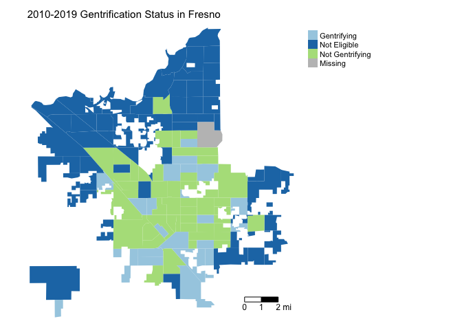

Lab 7b: Gentrification
CRD 150 - Quantitative Methods in Community Research
Professor Noli Brazil
May 11, 2022
We go from one form of place-based inequality in the last lab (segregation) to another form in this lab (gentrification). How do we determine whether a neighborhood is undergoing gentrification? Let’s find out using a quantitative approach. We’ll determine which neighborhoods are experiencing gentrification in the City of Fresno, an issue that has gotten a lot of local attention.
In this guide you will learn how to calculate the measure of gentrification used by Ding et al. (2016). This lab guide follows closely and supplements the material presented in class Handout 8.
Assignment 7 is due by 2:00 pm, May 18th on Canvas. See here for assignment guidelines. You must submit an .Rmd file and its associated .html file. Name the files: yourLastName_firstInitial_asgn07. For example: brazil_n_asgn07.
Open up a R Markdown file
Download the Lab template into an appropriate folder on your hard drive (preferably, a folder named ‘Lab 7b’), open it in R Studio, and type and run your code there. The template is also located on Canvas under Files. The template is also located on Canvas under Files. Change the title (“Lab 7b”) and insert your name and date. Don’t change anything else inside the YAML (the stuff at the top in between the ---). Also keep the grey chunk after the YAML. For a rundown on the use of R Markdown, see the assignment guidelines.
Installing and loading packages
We will not be using any new packages in this lab. You’ll need to load the following packages. Unlike installing, you will always need to load packages whenever you start a new R session. As such, you’ll always need to use library() in your R Markdown file.
library(sf)
library(tidyverse)
library(tidycensus)
library(tigris)
library(tmap)
library(rmapshaper)
library(knitr)Bringing in the data
We will use the Ding et al. (2016) method outlined in Handout 8 for measuring gentrification. The measure defines gentrification as follows
- A neighborhood is eligible for gentrification if its median household income is less than the city’s median household income at the beginning of the observation period.
- An eligible neighborhood gentrifies if its change from the beginning to the end of the observation period in median gross rent or median housing value is greater than the change in the city and the change in its percent of residents that have a college degree is more than the change in the city.
We will define the beginning of the period using 2006-2010 ACS data (this is the first ACS period using 2010 tract boundaries) and the end of the period using 2015-2019 ACS data. We need to bring in the appropriate variables from each of these years into R.
To demonstrate this measure, we will examine gentrification in the City of Fresno in California.
Tract level data
We will need to read in 2006-2010 tract-level median gross rent, median housing value and percent with a college degree for Fresno census tracts. We will use the get_acs() command to get these data. We won’t go through each line of code in detail because we’ve covered all of these operations and functions in prior labs. We’ve embedded comments within the code that briefly explains what each chunk is doing. Go back to prior guides (or RDS/GWR) if you need further help. Notice that I attached a 10 to the end of each variable to signify that it is for 2006-2010.
# Bring in 2006-2010 census tract data using the Census API
ca.tracts10 <- get_acs(geography = "tract",
year = 2010,
variables = c(medinc10 = "B19013_001", rent10 = "B25064_001",
houseval10 = "B25077_001", bachm = "B15002_015",
mastersm = "B15002_016", profm = "B15002_017",
phdm = "B15002_018", bachf = "B15002_032",
mastersf = "B15002_033", proff = "B15002_034",
phdf = "B15002_035", totcol = "B15002_001"),
state = "CA",
survey = "acs5",
output = "wide",
geometry = TRUE)
# Make the data tidy, calculate and keep essential vars.
ca.tracts10 <- ca.tracts10 %>%
rename_with(~ sub("E$", "", .x), everything()) %>%
mutate(pcol10 = 100*(bachm+mastersm+profm+phdm+bachf+mastersf+proff+phdf)/totcol) %>%
select(c(GEOID,medinc10, rent10, houseval10, pcol10)) Note that you might get an error that states
Calls: <Anonymous> ... withCallingHandlers -> withVisible -> eval -> eval -> get_acs
Execution haltedSometimes the Census API experiences a hiccup like above when downloading older data such as 2006-2010 ACS. My advice is to wait a few minutes (or more) and the run the code (or knit your file) again until the hiccup goes away.
We then need to keep just the City of Fresno tracts. Here we use familiar friends that were introduced in Lab 6.
# Bring in city boundaries. We'll use the boundaries for the final year, 2019
pl <- places(state = "CA", year = 2019, cb = TRUE)
# Keep Fresno city
fresno <- filter(pl, NAME == "Fresno")
#Keep tracts in Fresno
fresno.tracts <- ms_clip(target = ca.tracts10, clip = fresno, remove_slivers = TRUE)We now need to get the same variables but for the end of the period, which we define as 2015-2019. I’ve appended 19 to the end of each variable name to signify these are 2019 data. This is done to distinguish these variables from the 2010 ACS data, which we’ll be downloading later when we measure gentrification. Also note that we don’t need any spatial data since ca.tracts10 is already an sf object, so we don’t include the argument geometry = TRUE.
# Bring in 2015-2019 census tract data using the Census API
ca.tracts19 <- get_acs(geography = "tract",
year = 2019,
variables = c(tpop = "B03002_001",
nhwhite = "B03002_003", nhblk = "B03002_004",
nhasn = "B03002_006", hisp = "B03002_012",
medinc19 = "B19013_001", rent19 = "B25064_001",
houseval19 = "B25077_001", bach = "B15003_022",
masters = "B15003_023", prof = "B15003_024",
phd = "B15003_025", totcol = "B15003_001"),
state = "CA",
survey = "acs5",
output = "wide")
# Make the data tidy, calculate and keep essential vars.
ca.tracts19 <- ca.tracts19 %>%
rename_with(~ sub("E$", "", .x), everything()) %>%
mutate(pnhwhite19 = 100*(nhwhite/tpop), pnhasn19 = 100*(nhasn/tpop),
pnhblk19 = 100*(nhblk/tpop), phisp19 = 100*(hisp/tpop),
pcol19 = 100*(bach+masters+prof+phd)/totcol) %>%
select(c(GEOID,pnhwhite19, pnhasn19, pnhblk19, phisp19,
medinc19, rent19, houseval19, pcol19)) Finally, let’s combine the two tract level data objects. The sf object fresno.tracts contains 2006-2010 ACS tract-level data. We join the regular tibble ca.tracts19, which contains 2015-2019 ACS tract-level data, using left_join(). The GEOID is GEOID in both fresno.tracts and ca.tracts19
fresno.tracts <- fresno.tracts %>%
left_join(ca.tracts19, by = "GEOID")Make sure we’ve successfully merged all the variables we need.
glimpse(fresno.tracts)City level data
As described in Handout 8, we need to compare neighborhoods to the entire City of Fresno. This means we need to bring in city data for the beginning (2006-10) and end (2015-19) periods. First, let’s bring in 2006-2010 ACS data for all places in California using get_acs(). We use the argument geography = "place". We specify these data as place level 2006-2010 by attaching a c10 to the end of each variable. We can’t usegeometry = TRUE to bring in spatial data for 2006-2010 city data because tidycensus() does not provide spatial data for years before 2011.
# Bring in census tract data using the Census API
ca.places10 <- get_acs(geography = "place",
year = 2010,
variables = c(medincc10 = "B19013_001", rentc10 = "B25064_001",
housevalc10 = "B25077_001", bachm = "B15002_015",
mastersm = "B15002_016", profm = "B15002_017",
phdm = "B15002_018", bachf = "B15002_032",
mastersf = "B15002_033", proff = "B15002_034",
phdf = "B15002_035", totcol = "B15002_001"),
state = "CA",
survey = "acs5",
output = "wide")
# Make the data tidy, calculate and keep essential vars. Also take out zero population tracts
ca.places10 <- ca.places10 %>%
filter(NAME == "Fresno city, California") %>%
rename_with(~ sub("E$", "", .x), everything()) %>%
mutate(pcolc10 = 100*(bachm+mastersm+profm+phdm+bachf+mastersf+proff+phdf)/totcol) %>%
select(c(GEOID,medincc10, rentc10, housevalc10, pcolc10)) We next need to bring in current (2015-2019) city level data. We specify the data as place level 2015-2019 by attaching a c19 to the end of each variable. Here, we specify geometry = TRUE to get city spatial boundaries, and then filter to get just Fresno city.
# Bring in census tract data using the Census API
ca.places19 <- get_acs(geography = "place",
year = 2019,
variables = c(medincc19 = "B19013_001", rentc19 = "B25064_001",
housevalc19 = "B25077_001", bachc = "B15003_022",
mastersc = "B15003_023", profc = "B15003_024",
phdc = "B15003_025", totcolc = "B15003_001"),
state = "CA",
survey = "acs5",
output = "wide",
geometry = TRUE)
# Make the data tidy, calculate and keep essential vars. Also keep just Fresno
fresno.city <- ca.places19 %>%
filter(NAME == "Fresno city, California") %>%
rename_with(~ sub("E$", "", .x), everything()) %>%
mutate(pcolc19 = 100*(bachc+mastersc+profc+phdc)/totcolc) %>%
select(c(GEOID,medincc19, rentc19, housevalc19, pcolc19)) Finally, let’s combine the two city level data objects. The sf object fresno.city contains 2015-2019 ACS data just for Fresno city. We join the regular tibble ca.places10, which contains 2006-2010 ACS city-level data, to fresno.city using left_join(). The GEOID is GEOID in both files.
fresno.city <- fresno.city %>%
left_join(ca.places10, by = "GEOID")Putting the data all together
We have tract and city level data at the beginning and end of the period in separate data objects (fresno.tracts and fresno.city). We now need to join all of them together into a single file.
When you view fresno.tracts, you’ll notice that we don’t have any variable indicating the city identifier to merge in city-level data. Instead of left_join(), we instead use the st_join() function to join the city data to the tract data, which is a part of the sf package. Here, rather than using an ID like GEOID, the joining is based on geographic location. We already used st_join() in Lab 7a. Let’s use it again, friends.
fresno.tracts <- fresno.tracts %>%
st_join(fresno.city, left=FALSE)This function joins the variables from fresno.city to the data frame fresno.tracts.
Look at the data to make sure the joins went as expected.
glimpse(fresno.tracts)We’re done!
Measuring Gentrification
We’ve got all the data we need in one data object (fresno.tracts). Now we can start constructing our gentrification measure.
Gentrification eligible tracts
First, let’s determine whether a tract is eligible to gentrify in the first place. A neighborhood is eligible for gentrification if its median household income is less than the city’s median household income in 2006-2010. We create a variable named eligible that specifies whether a neighborhood is eligible or not using the ifelse() function within mutate().
fresno.tracts <- fresno.tracts %>%
mutate(eligible = ifelse(medinc10 < medincc10, "Eligible", "Not Eligible"))Here, the ifelse() function tells R that if a tract’s median household income medinc10 is less than the city level median household income medincc10, label that neighborhood “Eligible”. Otherwise, label the neighborhood as “Not Eligible”.
What is the proportion of neighborhoods that are eligible to gentrify? Here, we are summarizing a categorical variable, which we covered in Lab 4. Let’s put the results in a nice looking table by dropping the geometry using the function st_drop_geometry() and creating a nicely formatted table using the function kable(), which is a part of the knitr package. We use the argument digits = 2 to round the values to two significant digits after the decimal place.
fresno.tracts %>%
group_by(eligible) %>%
summarize(n = n()) %>%
mutate(proportion = n / sum(n)) %>%
ungroup() %>%
st_drop_geometry() %>%
kable(digits = 2)| eligible | n | proportion |
|---|---|---|
| Eligible | 71 | 0.56 |
| Not Eligible | 55 | 0.43 |
| NA | 1 | 0.01 |
Gentrifying tracts
Next, we identify which tracts that were eligible to gentrify that are gentrifying and which ones are not gentrifying. An eligible neighborhood gentrifies if its change between 2006-2010 and 2015-2019 in median gross rent or median housing value is greater than the change in the city and the change in its percent of residents that have a college degree is more than the change in the city.
Let’s first calculate the tract-level 2010 to 2019 differences in rent rentch, housing values housech, and percent with a college degree pcolch.
fresno.tracts <- fresno.tracts %>%
mutate(rentch = rent19-rent10, housech = houseval19-houseval10,
pcolch = pcol19-pcol10)Next, we calculate the city-level differences in rent rentchc, housing values housechc, and percent with a college degree pcolchc.
fresno.tracts <- fresno.tracts %>%
mutate(rentchc = rentc19-rentc10, housechc = housevalc19-housevalc10,
pcolchc = pcolc19-pcolc10)We now have all the pieces to construct a variable gent that labels tracts as “Not eligible”, “Gentrifying”, and “Not Gentrifying”. We do this using a set of ifelse() statements within mutate().
fresno.tracts <- fresno.tracts %>%
mutate(gent = ifelse(eligible == "Not Eligible", "Not Eligible",
ifelse(eligible == "Eligible" & pcolch > pcolchc &
(rentch > rentchc | housech > housechc), "Gentrifying",
"Not Gentrifying")))Examining Gentrification
What is the proportion of neighborhoods in Fresno that experienced gentrification? Let’s put it in a nice looking table by dropping the geometry using the function st_drop_geometry() and using the function kable().
fresno.tracts %>%
group_by(gent) %>%
summarize(n = n()) %>%
mutate(proportion = n / sum(n)) %>%
ungroup() %>%
st_drop_geometry() %>%
kable(digits = 2)| gent | n | proportion |
|---|---|---|
| Gentrifying | 22 | 0.17 |
| Not Eligible | 55 | 0.43 |
| Not Gentrifying | 49 | 0.39 |
| NA | 1 | 0.01 |
Approximately 17 percent of neighborhoods in Fresno experienced gentrification between 2010 and 2019. Where are these neighborhoods located? Let’s make a nice color patch map using our best buddy tm_shape().
tm_shape(fresno.tracts, unit = "mi") +
tm_polygons(col = "gent", style = "cat",palette = "Paired", border.alpha = 0,
title = "") +
tm_scale_bar(breaks = c(0, 1, 2), text.size = 0.75, position = c("right", "bottom")) +
tm_layout(main.title = "2010-2019 Gentrification Status in Fresno", main.title.size = 0.95, frame = FALSE, legend.outside = TRUE)
What are the mean percentages of residents that are Hispanic and non-Hispanic white, Black, and Asian in 2010 in each of the gentrification categories?
fresno.tracts %>%
st_drop_geometry() %>%
filter(is.na(gent) == FALSE) %>%
group_by(gent) %>%
summarize("% White" = mean(pnhwhite19),
"% Black" = mean(pnhblk19),
"% Hispanic" = mean(phisp19),
"% Asian" = mean(pnhasn19)) %>%
kable(digits = 2)| gent | % White | % Black | % Hispanic | % Asian |
|---|---|---|---|---|
| Gentrifying | 15.86 | 7.26 | 63.41 | 11.45 |
| Not Eligible | 42.92 | 4.56 | 36.21 | 12.98 |
| Not Gentrifying | 17.33 | 8.19 | 60.81 | 10.81 |
Exploring the association between gentrification and racial/ethnic composition and other demographic and socioeconomic characteristics is a great idea for your final project.

This work is licensed under a Creative Commons Attribution-NonCommercial 4.0 International License.
Website created and maintained by Noli Brazil